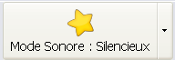

Vous pouvez configurer le mode parlant ou silencieux en cliquant sur Configuration > Mode sonore ou en cliquant simplement sur

Vous pouvez aussi choisir la voix du mode sonore en cliquant sur Configuration > Voix du mode sonore